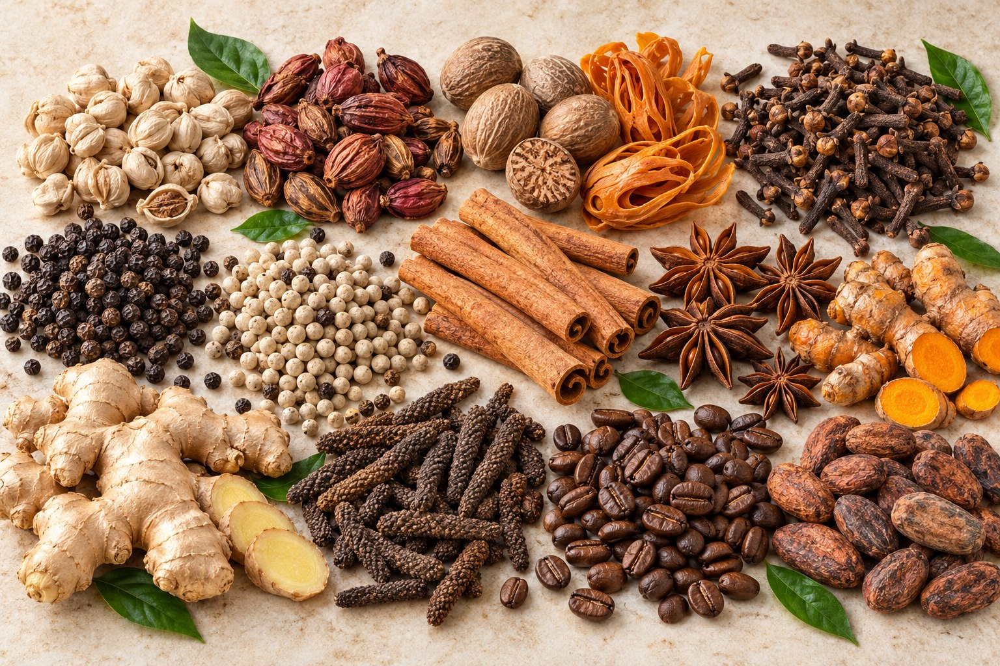

Our vision 企业愿景
To be a trusted trading partner for Indonesian spices, bringing the archipelago’s distinctive products to global markets.
成为值得信赖的印尼香料贸易伙伴，将群岛特色产品带向全球市场。
扎根印尼，服务全球。
Your Indonesian Spices Trading Partner
Mitra Dagang Rempah Nusantara Anda · 您值得信赖的印尼香料贸易伙伴
Established in 1996 · 创立于1996年
CV. Samin Makmur was established in 1996 in Magelang, Central Java, Indonesia, supplying high-quality Indonesian spices and agricultural products to domestic and international markets.
CV. SAMIN MAKMUR 于1996年在印度尼西亚中爪哇省马格朗市成立，面向印度尼西亚国内及国际市场供应优质香料和农产品。
We began as a regional trading company and, through years of steady growth, established an extensive network of farmers, collectors, and processing partners across Indonesia’s key spice-producing regions. Drawing on decades of industry experience, CV. Samin Makmur has developed deep expertise in spice sourcing, processing, quality control, and export management.
公司从区域贸易起步，经过稳步发展，逐步建立起覆盖印度尼西亚主要香料产区的农户、收购商及加工合作伙伴网络。凭借数十年的行业经验，CV. SAMIN MAKMUR 在香料采购、加工、质量管理和出口业务方面积累了深厚专业经验。
Today, CV. Samin Makmur serves customers across Asia, the Middle East, Europe, and other international markets, supplying clove, white cardamom, nutmeg, mace, pepper, cinnamon, galangal, ginger, and other Indonesian spices. With nearly 30 years of industry experience, we remain committed to delivering consistent quality, reliable supply, and lasting partnerships to customers worldwide.
如今，CV. SAMIN MAKMUR 服务于亚洲、中东、欧洲及其他国际市场，供应丁香、白豆蔻、肉豆蔻、肉豆蔻衣、胡椒、肉桂、高良姜（南姜）、生姜及其他印尼香料。凭借近30年的行业经验，我们始终致力于保持稳定品质、可靠供应，并与全球客户建立长期合作关系。
Our export-import range also includes cardamom, cloves, galangal, Java chili, nutmeg, and other spices from the Indonesian archipelago.
我们的进出口产品还包括豆蔻、丁香、高良姜、爪哇长胡椒、肉豆蔻及其他来自印度尼西亚群岛的香料。
Why partners choose us客户选择我们的理由
We connect the character of Indonesian spices with the needs of international partners—through clear communication and a lasting trading relationship.
我们以清晰沟通和长期合作为基础，将印尼香料的独特风味与国际合作伙伴的需求紧密连接。
To be a trusted trading partner for Indonesian spices, bringing the archipelago’s distinctive products to global markets.
成为值得信赖的印尼香料贸易伙伴，将群岛特色产品带向全球市场。
To build reliable partnerships through responsive trade, careful product handling, and export coordination.
以高效沟通、谨慎的产品处理和出口协调，建立稳定可靠的合作关系。
Our work is grounded in the diversity of Indonesian spices and the experience built since 1996.
我们的根基源自印度尼西亚香料的多样性，以及自1996年以来积累的行业经验。
Explore our existing range of Indonesian spices. For availability and specifications, please contact our team.
探索我们的印尼香料产品。如需了解产品供应情况和规格，请联系我们。

THE SPICE COLLECTION 印尼香料精选White Cardamom · 白豆蔻
Cloves · 丁香
Galangal Fruit · 红豆蔻
Javanese Chili / Long Pepper · 爪哇长胡椒
Nutmeg, with or without shell · 肉豆蔻（带壳或去壳）
Black Pepper · 黑胡椒
Ginger · 生姜
Turmeric · 姜黄
White Pepper · 白胡椒
Cinnamon · 肉桂
Mace · 肉豆蔻衣
Coffee Beans · 咖啡豆
Cocoa Beans · 可可豆
Vanilla Beans · 香草豆
Star Anise · 八角
Other Spices · 其他香料
Betel Nut · 槟榔果
From Indonesian spice-producing regions to international destinations, our work is built around reliable sourcing, careful quality control, and lasting trade relationships.
从印尼香料产区到全球目的地，我们始终坚持可靠采购、严格品控与长期合作。

Since 1996, Samin Makmur has sourced directly from more than 1,000 farms and key producing regions across Indonesia, supporting reliable supply, competitive pricing, and traceability from origin to destination.
自1996年以来，Samin Makmur 直接从印度尼西亚1,000多家农场及主要产区采购香料，助力稳定供应、保持价格竞争力，并实现从产地到目的地的产品追溯。
With more than 15,000 m² of processing facilities and over 5,000 m² of warehouse space, we can process and supply 300–500 tons per month. Products undergo sorting, cleaning, grading, and inspection against customer specifications and export standards.
公司拥有超过15,000平方米的加工设施和超过5,000平方米的仓储空间，月加工及供应能力为300至500吨。产品依照客户规格和出口标准进行分选、清洁、分级与检验。
Serving customers in 12 countries, we bring experience in export documentation, logistics coordination, and on-time delivery.
我们已服务12个国家的客户，在出口单证、物流协调和按时交付方面积累了丰富经验。
We build lasting business relationships through transparency, consistent quality, responsive communication, and dependable service.
我们以公开透明、品质稳定、及时沟通和可靠服务为基础，建立持久的商业合作关系。
Our product handling follows a coordinated sequence from raw material receiving through final packing and container loading.
从原料接收到最终包装和集装箱装柜，每个环节均按流程有序衔接。


Our trade coordination moves with the product and destination requirements discussed with each partner.
我们根据与合作伙伴确认的产品和目的地要求，协调各项贸易流程。
Share the spice, specifications and destination you have in mind.
请告知您关注的香料、规格要求及目的地。
Confirm product details and order requirements with our team.
与我们的团队确认产品详情及订单要求。
Coordinate product preparation and export requirements for the order.
协调产品准备及订单所需的出口要求。
Align shipping and required documentation for the destination.
根据目的地要求协调运输及相关单证。
We coordinate the applicable registrations, product checks, and shipment documents for each enquiry. Requirements can vary by product and destination.
我们根据具体询盘协调适用的注册要求、产品检测及出运单证。相关要求可能因产品和目的地而异。
Discuss your requirements沟通您的需求Documents, registrations, and checks are confirmed for the specific product and destination before shipment.出运前将根据具体产品和目的地确认所需单证、注册及检测项目。
Tell us what you’re looking for. Our team is ready to hear about your product and destination requirements.
欢迎告诉我们您关注的产品及目的地要求，我们的团队期待与您沟通。
Jl. Raya Magelang–Kopeng KM 2, Magelang 56192, Central Java, Indonesia.地址：印度尼西亚中爪哇省马格朗市 Magelang–Kopeng 公路2公里处，邮编56192。